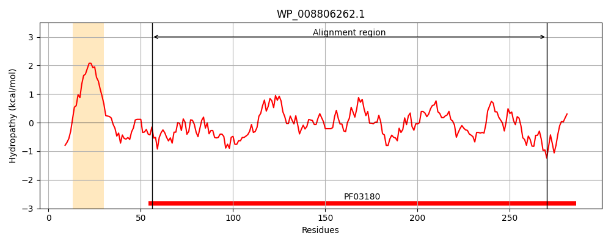
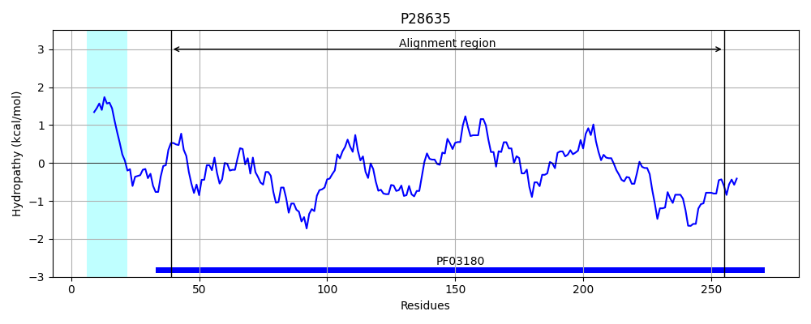
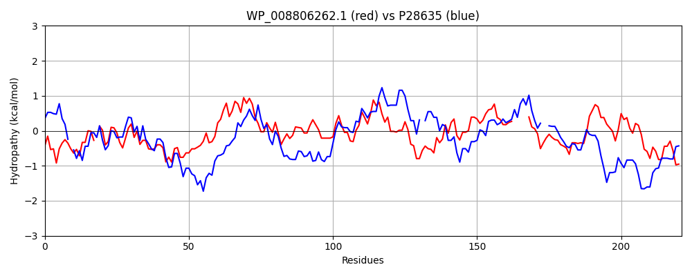

Hit Accession: P28635
Hit TCID: 3.A.1.24.1
Hit Description: gnl|BL_ORD_ID|9651 gnl|TC-DB|P28635|3.A.1.24.1 D-methionine-binding lipoprotein MetQ precursor - Escherichia coli.
Mach Len: 221
e:0.000000
Query TMS Count : 1
Hit TMS Count: 1
TMS-Overlap Score: 0.400000
Predicted Substrates:CHEBI:6829;methionine
BLAST Alignment:
Score: 223 , Bit scores: 90 bits, E-value: 2.5e-21, Alignment length: 221, Percentage identity: 29
Query: 56 MAGEQRIIEYINQHIAPD-YGLKLEAVGVQDPVQADRAVAEGQYAGTIYQHQWWLKQVVDANGFALSTTVPVFQWAFGIYSDRYSSVQALPNGATIVVPDDGANQGQALWLLQRIGLISLDPAVEPRTAKLKNIVGNPHQFVFKELDLLTMPRALNSVDAAIG-----YVSQFDAGKVPREKGILFPPAPRTFASQLVIGTPYLSQENIVKLKQAFSDPRI 270
+ EQ++ E + Q +A D YGL +E V D V + A+++G +QH+ +L Q + G+ L F + YS + S+ L +G+ + VP+D N G++L LLQ++GLI L V L ++V NP EL+ +PR+L+ A+ Y SQ G P + GI + + +V EN+ K QA+ +
Sbjct: 39 VGAEQQVAE-VAQKVAKDKYGLDVELVTFNDYVLPNEALSKGDIDANAFQHKPYLDQQLKDRGYKLVAVGNTFVYPIAGYSKKIKSLDELQDGSQVAVPNDPTNLGRSLLLLQKVGLIKLKDGVGLLPTVL-DVVENPKNLKIVELEAPQLPRSLDDAQIALAVINTTYASQI--GLTPAKDGIFVEDKESPYVNLIVTREDNKDAENVKKFVQAYQSDEV 255 | Protein Hydropathy Plots: |
|---|
|  |  |
Pairwise Alignment-Hydropathy Plot:
|
|---|
|  |